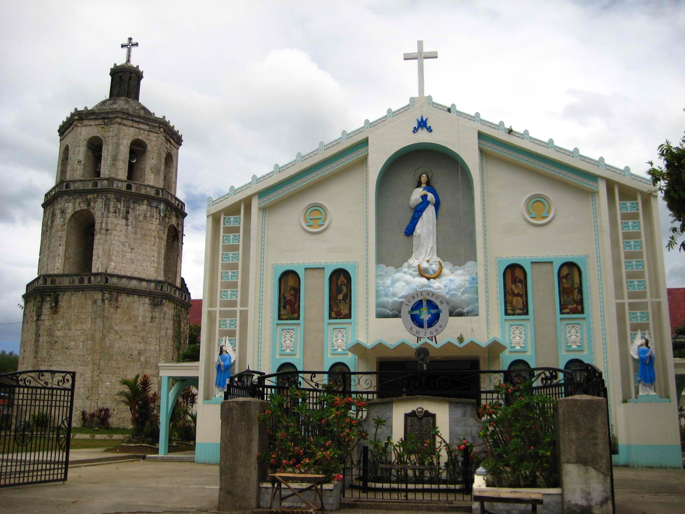
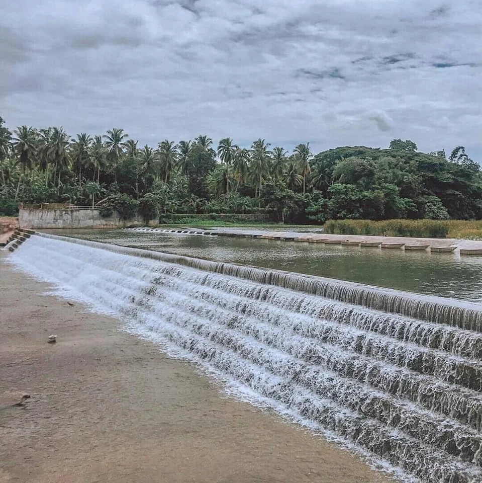
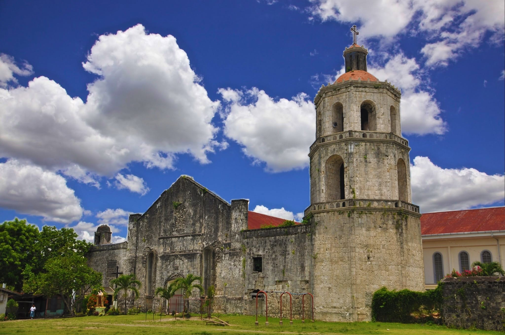

A glimpse of the south
Discover the history, culture, and warm spirit of the Bell Tower City.
Hilongos is a thriving municipality. You can learn more about its heritage by visiting the Wikipedia page, or you can check out our local gallery.

Hilongos Bell Tower
Standing tall for centuries,
a testament to our faith.
The spirit of Hilongosnons is bold and strong.
We have an interesting and vibrant history.
Don't forget to try our local delicacies!
Even a short visit leaves a lasting impression.
Historical artifacts have not been destroyed but preserved.
The town's coordinates include 10o North and 124o East.
"Hilongos is an ancient settlement that became a thriving center of commerce and faith."
As locals often say during fiestas, Viva Señor San Juan!
The LGU ensures the town's progress.
Read more in The History of Leyte.
This text demonstrates right-to-left direction.
This text demonstrates left-to-right direction.
Hover over a map area to explore Hilongos.


Get in touch with Lloyd Alcoser:
johnlloydalcoser@gmail.com